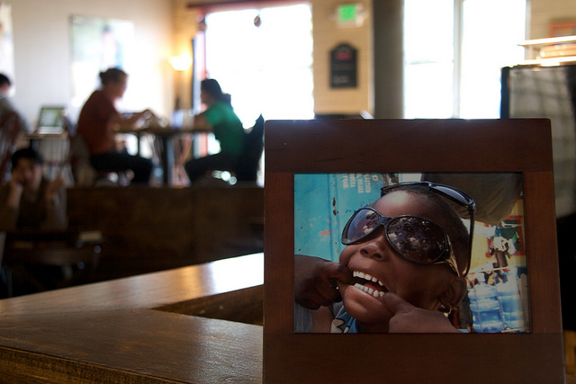

Our Story
Once upon a time (current day) there were Dominican and Haitian families living in poverty in the Dominican Republic, whose children had little or no access to a good education. At the same time, on the same island, there were coffee farmers growing one heck of a good coffee bean but not getting paid enough to support their families. Enter Makarios — a non-profit dedicated to helping pull families out of poverty by providing their kids with a quality education — and an idea that would help support the school and the community of farmers. What if we bought this high grade coffee (now certified by the Rainforest Alliance) directly from the farmers using fair trade practices, imported it to the US, and sold it here in order to raise money for the school? Brilliant!
With this idea in mind, Dominican Joe Coffee Shop was birthed in Austin, Texas and Cafe Makarios coffee (under the Dominican Joe label) made its way into the hearts and homes of caring people all over America who want to help make a difference. It really is possible to change the world by drinking coffee!

The Farmers
Most coffee farmers around the world live a life of poverty and illiteracy. Although Dominican farmers have little access to education, they are often second or third generation growers who have extensive knowledge of their crop. Most are in debt, have no savings, and cannot adequately provide for their families for roughly half of the year. In the Dominican Republic, the majority of coffee farms are about the size of your backyard and the farmers generally don't have the title to their land, which means they can't get loans to invest in or improve their farms. Coffee is easily affected by weather patterns and pests, and although properly managing their farms is very labor intensive, the farmers only receive a very small fraction of the profit. This is where Makarios and Dominican Joe come in. We buy direct trade from the farmers at fair trade prices, effectively cutting out all middlemen and ensuring that as much money as possible goes where it's most needed into helping improve the lives of the farmers, their families, and the students who attend both schools.